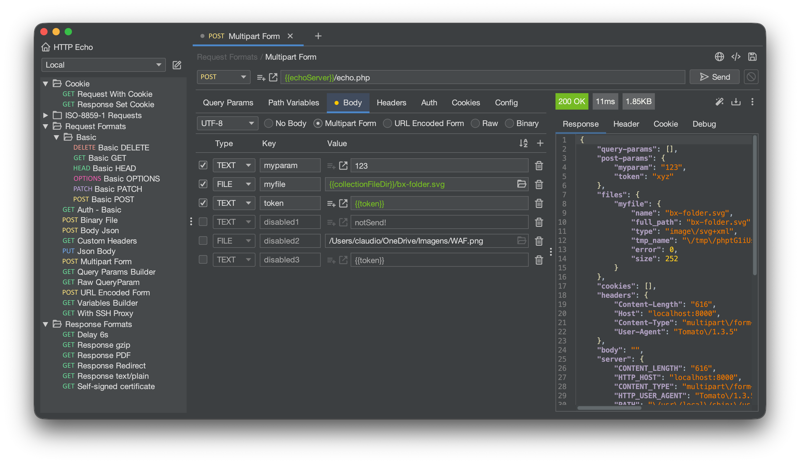

The open source, 100% offline REST client.
Send requests, organize collections and manage environments. Everything is saved as plain files on your machine.
Also available as a JRE-less .zip (requires Java 17+).
Windows & Portable are x64 · macOS is arm64.

A focused tool that keeps your work yours.
Your data stays on your disk and the app works without an internet connection. No sign-up, no login, no cloud workspace. Just open it and start working.
Collections and environments are readable JSON, one file per item. Version them in git, review real diffs, or share the folder with your team through any repository or shared drive.
Tokens and passwords are kept in encrypted KeePass vaults, separate from the rest of your config. You can commit your environments without leaking credentials.
Bring your Postman collections in and export them back out at any time. Switching tools is never a migration project.
Turn any request into ready-to-paste code, such as a curl command, in one click.
A native desktop app with no embedded browser. Large responses stream to disk instead of memory, so big payloads won't freeze the app.